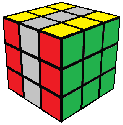

3x3 Roux Tutorial
What Goes Down...
In our color scheme, the UL and UR edges are the blue/yellow and green/yellow edges, respectively. To solve these two edges, we first move them both to the bottom layer. As we do this, we must make moves that preserve the edge orientation we just fixed. Permitted moves are:
- U, U', U2, and M2
- M and M' only if they are followed with U2M or U2M'
1 on top, 1 on DF
(U' MU2M')
1 on top, 1 on DB
(U M'U2M)
2 on top, opposite
(U M2)
2 on top, adjacent
(M2 U M'U2M)
...Must Come Up
Once the UL and UR edges are in the bottom layer, you will be able to see one of them on the front face. Note the color of this edge (in our case, blue or green), then turn the top layer so that the corner stickers facing you are the opposite color from the edge. In other words, if you can see a blue edge, you want to see green corners, and vice versa.
Now simply use M2 to bring the UL and UR edges to the top layer, then use U or U' to solve the L and R sides. As you make the final U turn, note the color of the sticker that will be in the BU position when UL/UR are solved. (BU is the back sticker in the middle of the top layer.) Knowing that color will probably come in handy for the final step.
Almost There!
You are only 3-5 turns away! All that remains is to solve the last 4 edges around their centers in the middle slice.
 Back
Back